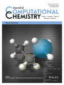
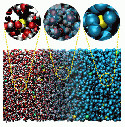
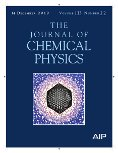

Reviewed Papers
- A. Diaw, K. Barros, J. Haack, C. Junghans, B. Keenan, Y. W. Li, D. Livescu, N. Lubbers, M. McKerns, R. S. Pavel, D. Rosenberger, I. Sagert, and T. C. Germann,
Multiscale simulation of plasma flows using active learning,
Phys. Rev. E 102, 023310 (2020) [online].
- N. Lubbers, A. Agarwal, Y. Chen, S. Son, M. Mehana, Q. Kang, S. Karra, C. Junghans, T. C. Germann, and H. S. Viswanathan,
Modeling and scale‐bridging using machine learning: nanoconfinement effects in porous media,
Sci. Rep. 10, 13312 (2020) [online].
- G. Tirimbo, V. Sundaram, O. Caylak, W. Scharpach, J. Sijen, C. Junghans, J. Brown, F. Zapata Ruiz, N. Renaud, J. Wehner, and B. Baumeier,
Excited-State Electronic Structure of Molecules Using Many-Body Green’s Functions: Quasiparticles and Electron-Hole Excitations with VOTCA-XTP,
J. Chem. Phys. 152, 114103 (2020) [online].
- H. V. Guzman, N. Tretyakov, H. Kobayashi, A. C. Fogarty, K. Kreis, J. Krajniak, C. Junghans, K. Kremer, and T. Stuehn,
ESPResSo++ 2.0: Advanced methods for multiscale molecular simulation,
Comp. Phys. Comm. 238, 66 (2019) [online].
- J. Wehner, L. Brombacher, J. Brown, C. Junghans, O. Caylak, Y. Khalak, P. Madhikar, G. Tirimbo, and B. Baumeier,
Electronic Excitations in Complex Molecular Environments: Many-Body Green's Functions Theory in VOTCA-XTP,
J. Chem. Theo. Comp. 14, 6253 (2018) [online].
- C. Krekeler, A. Agarwal, C. Junghans, M. Praprotnik, and L. Delle Site,
Adaptive Resolution Molecular Dynamics Technique: Down to the Essential,
J. Chem. Phys. 149, 024104 (2018) [online].
- H. V. Guzman, C. Junghans, K. Kremer, and T. Stuehn,
Scalable and fast heterogeneous molecular simulation with predictive parallelization schemes,
Phys. Rev. E 96, 053311 (2017) [online].
- S. K. Gutierrez, K. Davis, D. Arnold, R. S. Baker, R. W. Robey, P. McCormick, D. Holladay, J. A. Dahl, J. Zerr, F. Weik, and C. Junghans,
Accommodating Thread-Level Heterogeneity in Coupled Parallel Applications,
in: Proceedings of 2017 IEEE International Parallel and Distributed Processing Symposium (IPDPS),
Orlando, FL, USA, 469 (2017) [online].
- C. Junghans, A. Agarwal, and L. Delle Site,
Computational efficiency and Amdahl’s law for the adaptive resolution simulation technique,
Comp. Phys. Comm. 215, 20 (2017) [online].
- T. E. de Oliveira, P. A. Netz, K. Kremer, C. Junghans, and D. Mukherji,
C-IBI: Targeting cumulative coordination within an iterative protocol to derive coarse-grained models of (multi-component) complex fluids,
J. Chem. Phys. 144, 174106 (2016) [online].
- R. S. Pavel, A. L. McPherson, T. C. Germann, and C. Junghans,
Database Assisted Distribution to Improve Fault Tolerance for Multiphysics Applications,
in: Proceedings of the 2nd International Workshop on Hardware-Software Co-Design for High Performance Computing 2015 (Co-HPC '15),
ACM, New York, NY, USA, Article 4 [online].
- S. Y. Mashayak, M. N. Jochum, K. Koschke, N. R. Aluru, V. Rühle, and C. Junghans,
Relative entropy and optimization-driven coarse-graining methods in VOTCA,
PLoS one 10, e131754 (2015) [online].
"Among the top 10% most cited PLOS ONE papers published in 2015." (2019)
- S. M. Mniszewski, C. Junghans, A. F. Voter, D. Perez, and S. J. Eidenbenz,
TADSim: Discrete Event-based Performance Prediction for Temperature Accelerated Dynamics,
Trans. Mod. Comp. Sim. 25, 15 (2015) [online].
- D. G. Roehm, R. S. Pavel, K. Barros, B. Rouet-Leduc, A. L. McPherson, T. C. Germann, and C. Junghans,
Distributed Database Kriging for Adaptive Sampling,
Comp. Phys. Comm. 192, 138 (2015) [online].
- S. Bevc, C. Junghans, and M. Praprotnik, 
STOCK: Structure Mapper and Online Coarse-Graining Kit for Molecular Simulations,
J. Comp. Chem. 36, 467 (2015) [online] [Homepage].
- C. Junghans, D. Perez and T. Vogel,
Molecular Dynamics in the Multicanonical Ensemble: Equivalence of Wang-Landau Sampling, Statistical Temperature Molecular Dynamics, and Metadynamics,
J. Chem. Theo. Comp. 10, 1843 (2014) [online].
- B. Rouet-Leduc, K. Barros, E. Cieren, V. Elango, C. Junghans, T. Lookman, J. Mohd-Yusof, R. S. Pavel, A. Y. Rivera, D. Roehm, A. L. McPherson, and T. C. Germann,
Spatial adaptive sampling in multiscale simulation,
Comp. Phys. Comm. 185, 1857 (2014) [online].
- A. Nagarajan, C. Junghans and S. Matysiak,
Multiscale simulation of liquid water using a four-to-one mapping for coarse-graining,
J. Chem. Theo. Comp. 9, 5168 (2013) [online].
- S. Bevc, C. Junghans, K. Kremer and M. Praprotnik, 
Adaptive resolution simulation of salt solutions,
New J. Phys., 15, 105007 (2013) [online].
- P. Ganguly, D. Mukherji, C. Junghans and N. F. A. van der Vegt,
Kirkwood-Buff coarse-grained force fields for aqueous solutions,
J. Chem. Theo. Comp., 8, 1802 (2012) [online].
- S. Fritsch, S. Poblete, C. Junghans, G. Ciccotti, L. Delle Site and K. Kremer,
Adaptive resolution molecular dynamics simulation through coupling to an internal particle reservoir,
Phys. Rev. Lett. 108, 170602 (2012) [online].
- S. Fritsch, C. Junghans and K. Kremer,
Structure formation of toluene around C60: Implementation of the Adaptive Resolution Scheme (AdResS) into GROMACS,
J. Chem. Theo. Comp. 8, 398 (2012) [online].
- V. Rühle and C. Junghans,
Hybrid approaches to coarse-graining using the VOTCA package: liquid hexane,
Macromol. Theory Simul. 20, 472 (2011) [online].
- C. Junghans, W. Janke and M. Bachmann,
Hierarchies in Nucleation Transitions,
Comp. Phys. Comm. 182, 1937 (2011) [online].
- B. P. Lambeth, Jr., C. Junghans, K. Kremer, C. Clementi, and L. Delle Site, 
Communication: On the Locality of Hydrogen Bond Networks at Hydrophobic Interface,
J. Chem. Phys. 133, 221101 (2010) [online].
- C. Junghans and S. Poblete,
A reference implementation of the adaptive resolution scheme in ESPResSo,
Comp. Phys. Comm. 181, 1449 (2010) [online].
- V. Rühle, C. Junghans, A. Lukyanov, K. Kremer and D. Andrienko,
Versatile Object-oriented Toolkit for Coarse-graining Applications,
J. Chem. Theo. Comp. 5, 3211 (2009) [online] [Homepage]
.
- C. Junghans, M. Bachmann and W. Janke,
Statistical Mechanics of Aggregation and Crystallization for Semiflexible Polymers,
Europhys. Lett. 87, 40002 (2009) [online].
- H. Wang, C. Junghans and K. Kremer,
Comparative atomistic and coarse-grained study of water: What do we lose by coarse-graining?,
Euro. Phys. J. E 28, 221 (2009) [online].
"Most cited article published in the journal in the past 5 years" (2014)
- M. Praprotnik, C. Junghans, L. Delle Site and K. Kremer,
Simulation approaches to soft matter: Generic statistical properties vs. chemical details,
Comp. Phys. Comm. 179, 51 (2008) [online].
- C. Junghans, M. Bachmann and W. Janke,
Thermodynamics of Peptide Aggregation Processes: An Analysis from Perspectives of Three Statistical Ensembles,
J. Chem. Phys. 128, 085103 (2008) [online].
- C. Junghans, M. Praprotnik and K. Kremer,
Transport properties controlled by a thermostat: An extended dissipative particle dynamics thermostat,
Soft Matter 4, 156 (2008) [online].
- C. Junghans, M. Bachmann and W. Janke,
Microcanonical Analyses of Peptide Aggregation Processes,
Phys. Rev. Lett. 97, 218103 (2006) [online].
- C. Junghans and U. H. E. Hansmann,
Numerical Comparison of Wang Landau Sampling and Parallel Tempering for Met-enkephalin,
Int. J. Mod. Phys. C 17, 817 (2006) [online].
For more infomation see my ResearcherID profile, my Google Scholar profile, my ORCID profile, my ResearchGate profile or my Impactstory profile.
Theses
- C. Junghans,
Between the Scales: Water from different Perspectives,
PhD Thesis, Johannes Gutenberg-Universität Mainz (2010), Google Books, [online].
- C. Junghans,
Aggregation of Mesoscopic Protein-like Heteropolymers,
Diploma Thesis, Universität Leipzig (2006) [online].
Book Chapters
- L. Delle Site, A. Agarwal, C. Junghans, and H. Wang,
Adaptive Resolution Simulation as a Grand Canonical Molecular Dynamics Scheme: Principles, Applications, Perspectives,
in: C. Clementi (Ed.),
Multiscale Methods in Molecular Biophysics,
Series in Computational Biophysics, CRC Press (2016), ISBN 1482225700 [online].
- E. Apol, R. Apostolov, H.J.C. Berendsen, A. van Buuren, P. Bjelkmar, R. van Drunen, A. Feenstra, S. Fritsch, G. Groenhof, C. Junghans, P. Kasson, P. Larsson, P. Meulenhoff, T. Murtola, S. Pall, S. Pronk, R. Schulz, M. Shirts, A. Sijbers, P. Tieleman, B. Hess, D. van der Spoel, and E. Lindahl,
Gromacs User Manual Version 4.6,
gromacs.org (2013) [online].
- C. Junghans, M. Praprotnik and L. Delle Site,
Adaptive Resolution Schemes,
in: J. Grotendorst, N. Attig, S. Blügel and D. Marx (Eds.),
Multiscale Simulation Methods in Molecular Sciences, NIC Series Vol. 42, Jülich (2009), 359 [online].
Proceedings
- S. Eidenbenz, K. Davis, A. Voter, H. Djidjev, L. Gurvits, C. Junghans, S. Mniszewski, D. Perez, N. Santhi and S. Thulasidasan,
Optimization Principles for Codesign applied to Molecular Dynamics: Design Space Exploration, Performance Prediction, and Optimization Strategies,
in: Proceedings of the DOE ASCR Exascale Research Conference, Portland, OR (2012), [online] (LA-UR 12-20070).
- T. Weidauer, C. Junghans, O. Pauluis, M. Pütz and J. Schumacher,
Shallow Moist Convection,
in: G. Münster, D. Wolf, M. Kremer (Eds.),
NIC Symposium 2010, IAS Series Vol. 3, Jülich (2010), 373 [online].
- C. Junghans, M. Bachmann and W. Janke,
Phase Separation in Peptide Aggregation Processes - Multicanonical Study of a Mesoscopic Model,
in: U. H. E. Hansmann, J. Meinke, S. Mohanty and O. Zimmermann (Eds.),
From Computational Biophysics to Systems Biology 2007, NIC Series Vol. 36, Jülich (2007), 169 [online].
- C. Junghans and U. H. E. Hansmann,
Cross-Check Methods in Protein Simulations,
in: U. H. E. Hansmann, J. Meinke, S. Mohanty and O. Zimmermann (Eds.),
From Computational Biophysics to Systems Biology 2006,
NIC Series Vol. 34, Jülich (2006), 157.
Other Publications
- Balancing the load: Los Alamos researchers develop code to distribute computation more efficiently and across increasing numbers of supercomputer processors.
ASCR Discovery Story, May 2018, HPCwire, insideHPC and LANL Science Brief
- C. Junghans, A. K. Hüttel and U. Müller,
Gentoo Linux: Quelltexte und Rolling Releases,
c't Magazin 16, 162 (2012).
- C. Junghans,
The Method of Multicanonical Simulations in Different Models,
Technical Report, Universität Leipzig (2005), [online].
- C. Junghans,
Modern Methods in Protein Simulations,
in: R. Esser(Ed.), Technical Report IB-2005-13,
John von Neumann Institute for Computing, Jülich (2005), 83 [online].
{kind=link}
{kind=link}
{kind=link}
 Christoph Junghans,
Last modified on Mon Aug 24 12:42:36 2020
(See sources,
Validate HTML)
Christoph Junghans,
Last modified on Mon Aug 24 12:42:36 2020
(See sources,
Validate HTML)